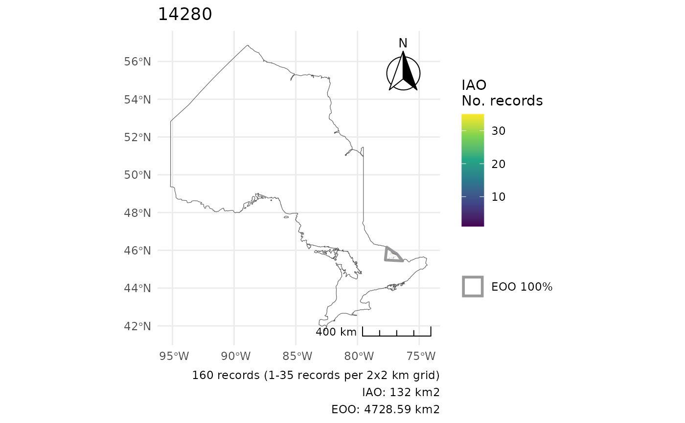
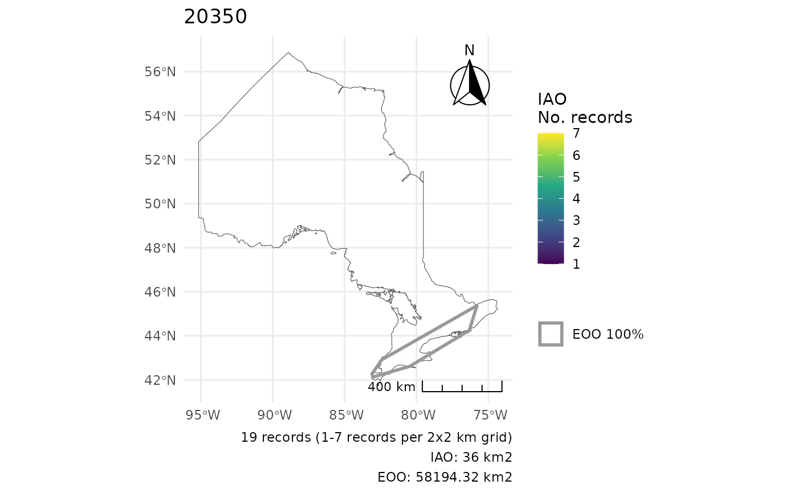
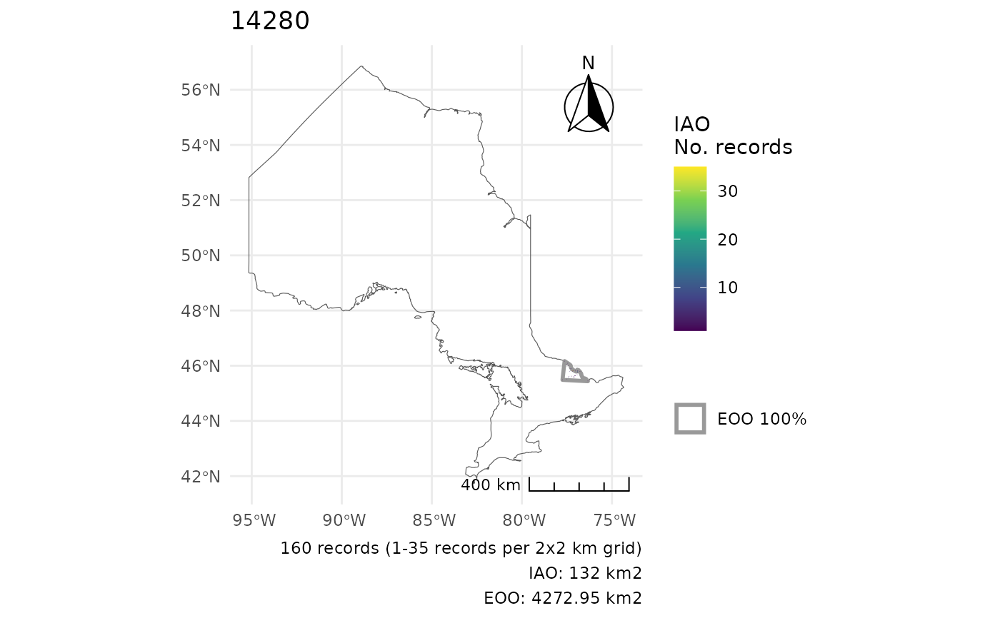
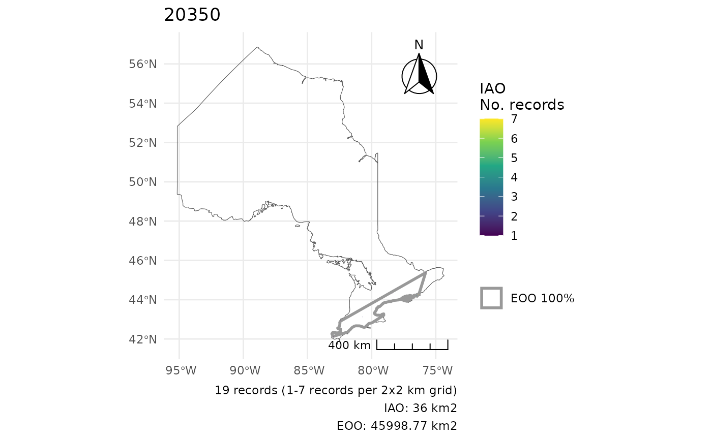
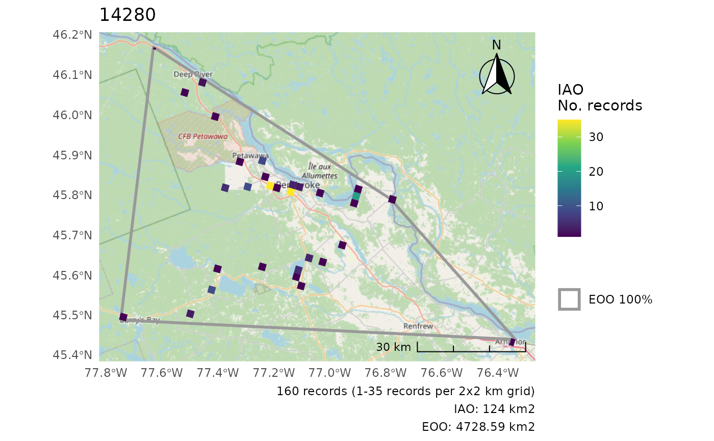
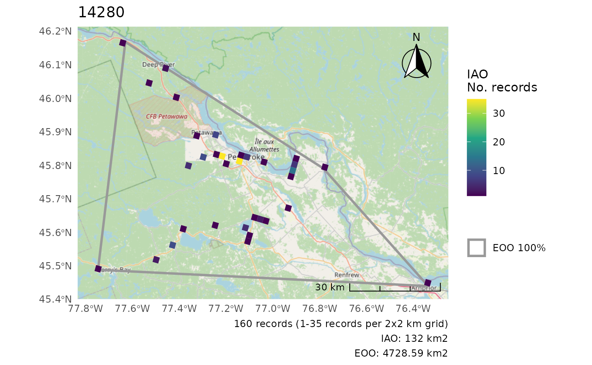

The COSEWIC Index of Area of Occupancy (IAO; also called Area of Occupancy, AOO by the IUCN) and Extent of Occurrence (EOO; IUCN as well) are metrics used to support status assessments for potentially endangered species.
Usage
cosewic_ranges(
df_db,
record = "record_id",
coord_lon = "longitude",
coord_lat = "latitude",
group = "species_id",
iao_grid_size_km = 2,
iao_grid = NULL,
eoo_p = 1,
eoo_clip = NULL,
crs = "ESRI:102001",
which = c("eoo", "iao"),
filter_unique = FALSE,
spatial = TRUE,
species
)Arguments
- df_db
Either data frame or a connection to database with
naturecountstable.- record
Character. Name of the column containing record identification.
- coord_lon
Character. Name of the column containing longitude.
- coord_lat
Character. Name of the column containing latitude.
- group
Character. Name of the column containing group identification. By default this is
species_idin NatureCounts data.- iao_grid_size_km
Numeric. Size of grid (km) to use when calculating IAO. Default is COSEWIC requirement (2km, meaning 2x2km grids of 4km2). Use caution if changing.
- iao_grid
sf Polygon. Supply your own IAO grid rather than creating one. The CRS of this grid must be the same as
crs.- eoo_p
Numeric. The percentile to calculate the convex hull over. Defaults to 1 for a 100% convex hull to match COSEWIC requirements (includes all points). Note that you may wish to use 0.95 for a 95% convex hull to ensure outlier points do not artificially inflate the EOO.
- eoo_clip
sf (Multi)Polygon. A spatial object to clip the EOO to. May be relevant when calculating EOOs for complex regions (i.e. long curved areas) to avoid including area which cannot have observations.
- crs
A coordinate reference system (see
?sf::st_transform()). Defaults to Albers Equal-Area for Canada (ESRI:102001) for area calculations. Note that it must be a projection (i.e. not simply a reference system like 4326 used for GPS) for area calculations. IfNULLfor plots, uses the CRS of the base map or of the IAO/EOO data.- which
Character vector. Which range types to calculate. Any combination of "eoo" and "iao", default is both.
- filter_unique
Logical. Whether to filter observations to unique locations. Use this only if there are too many data points to work with. This changes the nature of what an observation is, and also may bias EOO calculations if using less than 100% of points (see
eoo_p).- spatial
Logical. Whether to return sf spatial objects showing calculations. If
FALSE(the default) returns a data frame with the IAO and EOO values. IfTRUEreturns a list of objects with both the values and the spatial grid/polygons.- species
Deprecated. Use
groups.
Value
Summarized data frame (ranges) or list containing ranges, a
summarized data frame, and spatial, a list of two spatial data frames.
ranges contains columns
n_records_total- Total number of records used to create rangesmin_record- Minimum number of records within IAO cellsmax_record- Maximum number of records within IAO cellsmedian_record- Median number of records within IAO cellsgrid_size_km- IAO cell size (area is this squared)n_occupied- Number of IAO cells with at least one recordiao- IAO value (grid_size_km^2 *n_occupied)eoo_pXX- EOO area calculated with a convex hull at percentileeoo_p(e.g., 100% or 95%)
spatial contains spatial data frames
iao_sf- Polygons of the IAO grids with then_recordsper celleoo_sf- Polygon of the Convex Hull at percentileeoo_p
Details
Note that the while the IUCN calls this metric AOO, in COSEWIC, AOO is actually a different measure, the biological area of occupancy. See the Distribution section in 'Instructions for preparing COSEWIC status reports' for more details.
By default the EOO is calculated using all points (eoo_p = 1 for 100% of
However, if you're working on rough data or want to do a rough first pass,
you may wish to use eoo_p = 0.95 or 95% of points (based on distance to the
centroid). This will ensure outlier observations will not artificially
inflate the EOO. However, for a final COSEWIC assessment report, it is likely
better to carefully explore the data to ensure there are no outliers and then
use the full data set (i.e. use the default of eoo_p = 1).
The IAO is calculated by first assessing large grids (10x large than the specified size). Only then are smaller grids created within large grid cells containing observations. This speeds up the process by avoiding the creation of grids in areas where there are no observations. This means that the plots and spatial objects may not have grids over large areas lacking observations. See examples.
Details on how IAO and EOO are calculated and used
Examples
# Using the included, test data on black-capped chickadees
r <- cosewic_ranges(bcch)
r
#> $iao
#> Simple feature collection with 475 features and 10 fields
#> Geometry type: POLYGON
#> Dimension: XY
#> Bounding box: xmin: 1407460 ymin: 785222 xmax: 1537823 ymax: 867036.6
#> Projected CRS: Canada_Albers_Equal_Area_Conic
#> # A tibble: 475 × 11
#> species_id n_records_total grid_id n_records min_record max_record
#> <int> <int> <int> <int> <int> <int>
#> 1 14280 160 1 0 1 35
#> 2 14280 160 2 0 1 35
#> 3 14280 160 3 0 1 35
#> 4 14280 160 4 0 1 35
#> 5 14280 160 5 0 1 35
#> 6 14280 160 6 0 1 35
#> 7 14280 160 7 0 1 35
#> 8 14280 160 8 0 1 35
#> 9 14280 160 9 0 1 35
#> 10 14280 160 10 0 1 35
#> # ℹ 465 more rows
#> # ℹ 5 more variables: median_record <int>, grid_size_km [km], n_occupied <int>,
#> # iao [km^2], geometry <POLYGON [m]>
#>
#> $eoo
#> Simple feature collection with 1 feature and 3 fields
#> Geometry type: POLYGON
#> Dimension: XY
#> Bounding box: xmin: 1415235 ymin: 792053.4 xmax: 1535250 ymax: 866555.2
#> Projected CRS: Canada_Albers_Equal_Area_Conic
#> # A tibble: 1 × 4
#> species_id n_records_total x eoo_p100
#> <int> <int> <POLYGON [m]> [km^2]
#> 1 14280 160 ((1426543 792053.4, 1415235 866555.2, 149… 4729.
#>
r <- cosewic_ranges(bcch, spatial = FALSE)
r
#> # A tibble: 1 × 9
#> species_id n_records_total min_record max_record median_record grid_size_km
#> <int> <int> <int> <int> <int> [km]
#> 1 14280 160 1 35 1 2
#> # ℹ 3 more variables: n_occupied <int>, iao [km^2], eoo_p100 [km^2]
# Calculate for multiple groups
mult <- rbind(bcch, hofi)
r <- cosewic_ranges(mult)
r <- cosewic_ranges(mult, spatial = FALSE)
# Consider the Ontario MNR Lambert projection (all observations are in Ontario)
r2 <- cosewic_ranges(mult, crs = 3162)
# Clip to a specific region
library(rnaturalearth)
ON <- ne_states("Canada") %>%
dplyr::filter(postal == "ON")
r <- cosewic_ranges(mult)
cosewic_plot(r, map = ON) # No clip
#> $`14280`
#> Scale on map varies by more than 10%, scale bar may be inaccurate

#>
#> $`20350`
#> Scale on map varies by more than 10%, scale bar may be inaccurate

#>
r <- cosewic_ranges(mult, eoo_clip = ON)
cosewic_plot(r, map = ON) # With clip
#> $`14280`
#> Scale on map varies by more than 10%, scale bar may be inaccurate

#>
#> $`20350`
#> Scale on map varies by more than 10%, scale bar may be inaccurate

#>
# Use a custom IAO grid
# Load the demo grid for the bcch data set
grid <- sf::st_read(system.file(
"extdata",
"iao_bcch_grid.gpkg",
package = "naturecounts"
))
#> Reading layer `iao_bcch_grid' from data source
#> `/home/runner/work/_temp/Library/naturecounts/extdata/iao_bcch_grid.gpkg'
#> using driver `GPKG'
#> Simple feature collection with 3575 features and 1 field
#> Geometry type: POLYGON
#> Dimension: XY
#> Bounding box: xmin: 1406468 ymin: 786875.6 xmax: 1535250 ymax: 894738.5
#> Projected CRS: Canada_Albers_Equal_Area_Conic
r <- cosewic_ranges(bcch, iao_grid = grid)
#> User-provided grid has cell size of 2 [km]
cosewic_plot(r)
#> Zoom: 9

# Slight differences when compared to internally created grid,
# just due to where the observations line up
r <- cosewic_ranges(bcch)
cosewic_plot(r)
#> Zoom: 9
